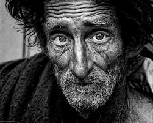
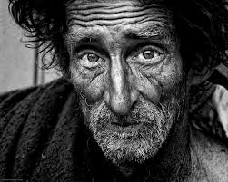

The Significance of Homelessness
You’ve probably lost count of the amount of times that you have walked a homeless person sitting by the side of the road or carrying a sign asking for a small donation. Have you ever taken the time to think about how they got there or why they haven’t gotten the help necessary to get back on their feet? Homelessness is a serious issue that continues to damage the lives of millions of Americans of all ages everyday. Addiction, mental issue, and broken families are just a few of the the social forces that homelessness stem from. Our country’s lack fo structural forces such as available low-cost housing, good economic conditions, and sufficient mental health services contribute to the spread of this matter.
Homelessness: The Youth
While most teens spend their days in classrooms, many young people living on the street or in shelters have reported that their parents asked them to leave or felt that it was the only other option due to abuse in their household.
- 46% reported being physically abused
- 38% reported being emotionally abused
- 17% reported being forced into unwanted sexual activity
Kids living in the foster care system are at risk of becoming homeless once they age out of the system with a 50% chance of becoming homeless within 6 months of being on their own. The youth are at extreme risk of experinecing forms of abuse, sexual exploitation, substance abuse, mental health issues, and death. The vicious cycle of homelessness is a result of the lack of resources.
 

Ways We Can Make a Difference
The little things can make a big difference! Send petitions to your local government officials and state representatives requesting permanent affordable housing. Housing provides protection and security. Housing serves as a foundation that can help people get jobs and keep them. Volunteering at food shelter as well as homeless shelters is also a great way to be active in your community and contribute to the betterment others.